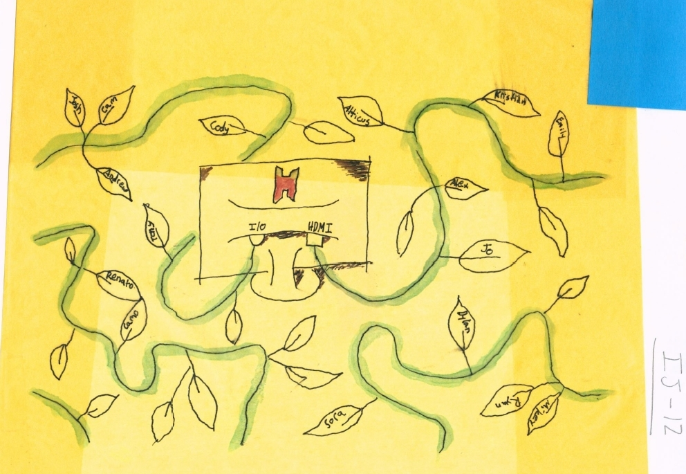

It’s very rare to find somebody who ran into zero problems while growing up. Most of my issues originated with familial turmoil. My father was diagnosed with leukemia when I was 3 years old. It left an already emotionally troubled man even more angry at everything. My parents divorced soon after he recovered, and my older sister moved out after disowning our father. I was still very young and started commuting between households every other weekend. I grew up without a lot of solid ground to stand on. I’m very lucky to have a stable and amazing mother to help guide me, however, my other home with my father was hectic and unpredictable. This left me a bit distant myself, never feeling comfortable letting people into my life and having trouble making friends.
In middle school, I turned to the computer to help distract myself from the real world. This place became the safe space I would run to every day after school. I met a great group of people while playing a game called Minecraft. We all played games together every day for years. But for most of that time, I didn’t know very many of their real names. I was able to escape the world to a distant place where I felt more confident. However, it wasn’t healthy to completely shut me off from the world. I eventually realized that my safe space needed to be expanded. My Autobiography of Place: “A War of Aliases”, details more of this.

My Computer's ConnectionsMy Computer's Connections
After my internet pals helped me gain newfound confidence in myself, I was able to bring that out into the real world. Once I hit high school, I was finally able to make lasting connections. I found people who shared similar interests and personalities and was finally able to let people into my life. I even introduced some of these new friends to my internet pals, which made things even more fun. I felt secure and safe, which was a refreshing change of pace. Even if I still had to deal with many familial and social issues, I finally had a support network to fall back on and keep me stable. It took a while, but at that time I finally realized...
Friendship is Power
Unfortunately, things can’t stay bright and sunny forever. I stayed fairly healthy and stable in high school, but being thrown in college threw things off balance. New challenges and growth awaited me there.